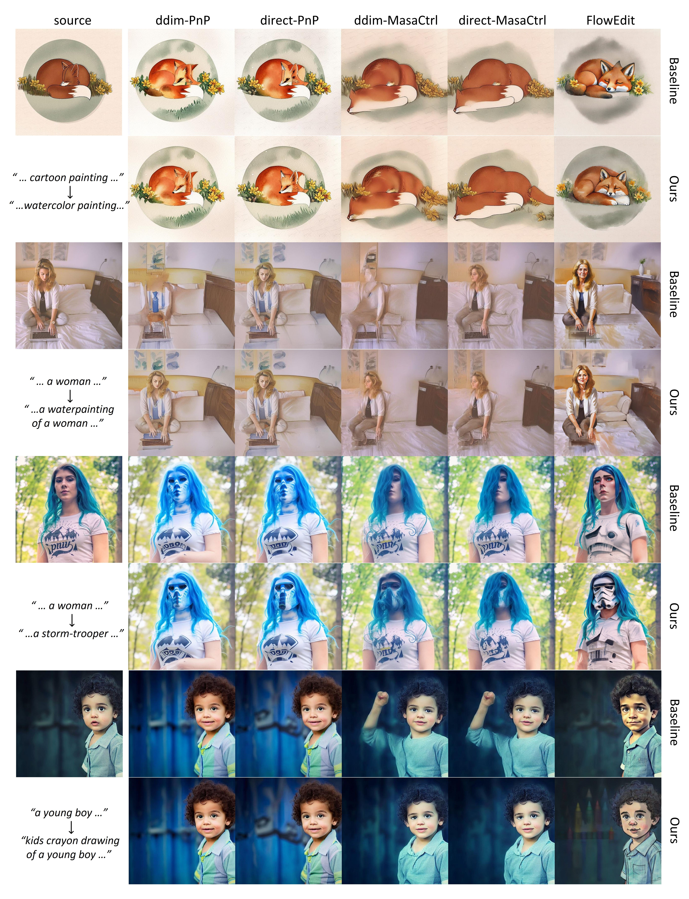
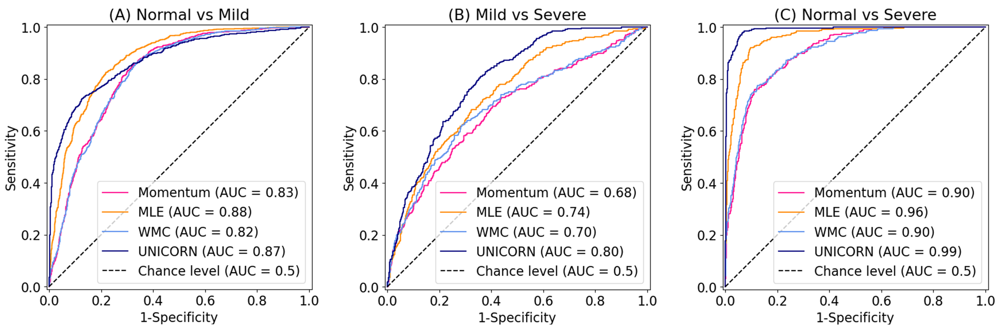

Alignment-Guided Score Matching for Text-to-Image Alignment in Diffusion Models
ICML 2026, Spotlight
A score-matching approach for improving text-to-image alignment in diffusion models.
KAIST AI / BISPL Lab
I am a PhD student in Artificial Intelligence at KAIST, advised by Prof. Jong Chul Ye. My research interests include generative AI, diffusion reinforcement learning, autoregressive video diffusion, and multimodal representation alignment.
I previously worked on MRI reconstruction, metal-artifact correction, and medical image analysis. I was also a research intern on the diffusion team at Disney Research Zurich.
Selected work across diffusion models, medical imaging, and multimodal representation learning.

ICML 2026, Spotlight
A score-matching approach for improving text-to-image alignment in diffusion models.

arXiv, 2026
Score matching and adaptation for ultrasound Nakagami imaging and hepatic steatosis assessment.

MR Reconstruction in k-space using Vision Transformer boosted with Masked Image Modeling, ISMRM 2023.
Metal Artifact Correction MRI Using Multi-contrast Deep Neural Networks for Diagnosis of Degenerative Spinal Diseases, MICCAI Workshop 2022.
An unsupervised two-step training framework for LDCT denoising, Medical Physics 2023.
Unsupervised Domain Adaptation for Low-dose Computed Tomography Denoising, IEEE Access 2022.
Wavelet Subband-specific Learning for Low-dose Computed Tomography Denoising, PLOS ONE 2022.
Worked on the diffusion team, advised by Vinicius C. Azevedo, contributing to diffusion model training and preprocessing tools.
Developing an image encoder for multi-contrast PET imaging in an NRF-supported project.
Developed AI tools for quantifying proton density fat fraction from ultrasound raw data.